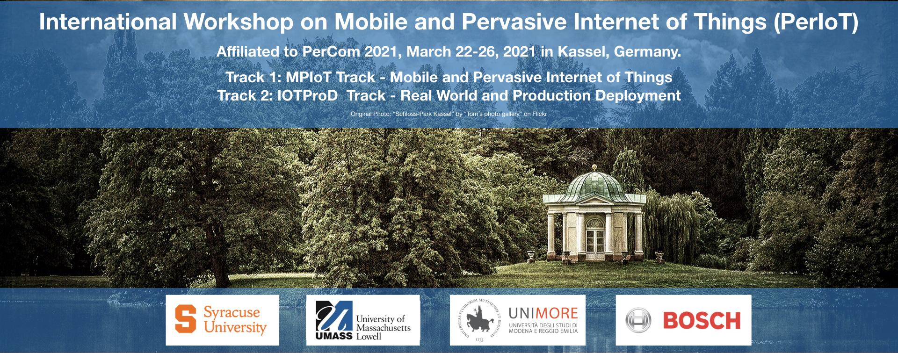

International Workshop on Mobile and Pervasive Internet of Things (PerIoT)
March 22-26, 2021 in Kassel, Germany (co-located with IEEE PerCom 2021)
Warning: This website is currently under construction
The Internet-of-Things (IoT) rapidly revolutionized the scenario of modern technologies and communication systems. The IoT enables large numbers of previously unconnected devices to communicate and exchange data and deal with services that span areas from healthcare to transportation and much more, with the potential for significant benefits to people and quality of life. In recent years, the Internet has become increasingly pervasive allowing people to connect anytime and everywhere to achieve pervasiveness and mobility. The coupling among mobile technology, embedded objects, and a worldwide pervasive communication infrastructure constitutes the Mobile and Pervasive Internet-of-Things. However, the domain of mobile and pervasive IoT has expanded in recent years which lead to few new challenges like 1) IoT has quickly evolved to a new appified era where third-party developers can write apps for IoT platforms using programming frameworks, 2) with the advent of emerging IoT technologies like industrial IoT, agriculture IoT and narrowband IoT, new research problems are surfacing related to connectivity and data storage, and 3) the confluence of IoT with augmented and virtual reality (AR/VR), there are newer challenges to enable digital representation of physical objects.
Nevertheless, for a long time, IoT has been mainly driven by academics and only during last years companies and industrial players understood the real potential of these technologies and started guiding the fourth industrial revolution and the creation and deployments of production-ready IoT applications. This new trend uncovered a plethora of new additional appealing technological challenges (affecting all the architectural layers) associated with the design and deployment of innovative IoT technologies out of the comfort zone bringing them to the real world and to long term production environments.
The aim of the workshop is to bring together authors from the research and industrial communities, standardization bodies, and institutional entities to meet and exchange ideas on recent research, challenges and future directions on: i) the recent advances in the area of existing and emerging mobile and pervasive IoT technologies and ii) research, challenges and future directions for IoT real-world deployments in multiple production-ready application scenarios. PerIoT is organized with two main tracks in order to properly highlight the contributions related to the two main focuses of the event. The workshop solicits high-quality papers presenting original research results on the following two core areas and the associated topics:
Track 1: MPIoT Track - Mobile and Pervasive Internet of Things
- Design of new protocols for existing and emerging IoT technologies
- Analysis of protocols for existing and emerging IoT technologies
- System architectures of existing and emerging IoT systems
- Interoperability of existing and emerging IoT protocols
- Machine Learning for existing and emerging IoT applications
- Testing, Validation, Verification of existing and emerging IoT protocols Energy efficiency, performance and optimization in existing and emerging - IoT systems Vulnerability, fault-tolerance, and reliability in existing and emerging - IoT protocols
- Cloud back-ends and resource management for IoT applications New connectivity methods for IoT (e.g. 5G Networks, Legacy Networks, - Software Defined Networks for IoT, Named IoT Networking)
- IoT application for augmented and virtual reality
- New protocols for pairing AR/VR with existing and emerging IoT Debugging and diagnosing problems in IoT protocols, existing and emerging - IoT technologies
- Societal impacts of the existing and emerging IoT applications
Track 2: IOTProD Track - Real World and Production Deployment
- IoT Real-World Deployments
- IoT Connectivity Standards
- Transition from research prototype to industry grade products
- IoT Sustainability and Energy Awareness
- IoT Privacy
- Edge Computing deployments and architectures
- Edge and Cloud interoperability and integration Digital Twin oriented approaches and cyber physical interaction - applications
- Emerging AI techniques and adoption on large scale datasets
- Application and case studies of 5G and IoT Tooling for debugging and diagnostics, monitoring and decreasing - operational costs while increasing system availability
- IoT root cause and predictive analysis in large networks
- Multi-region/multi-vendor autonomic adaptation
- IoT systems of systems (large scale, multi-region, multi-use case)
- Mobility challenges and Edge Computing Software Engineering and Architecture for IoT (reusability of AI models, - pay per feature, microservices)
Technical Program
TBD
Important Dates
Papers submission deadline: November 16, 2020
Author notification due: January 5, 2020
Camera ready deadline: February 5, 2021 (FIRM)
Author registration deadline: See PERCOM 2021 website
Workshop date: March 26, 2021 (Friday) (Tentative)
Call for Papers (CFP)
Submission Guidelines
Papers should contain research and scholarly work describing original, previously unpublished work, which is not currently under review by another workshop, conference, or journal. Submissions must be made via EDAS.
Regular papers should present novel perspectives within the scope of one of the two tracks of the workshop. Papers must be in PDF format (6 pages maximum). Papers in excess of page limits will not be considered for review or publication. PerIoT is single-blind. All papers must be typeset in double-column IEEE format using 10pt fonts on US letter paper, with all fonts embedded. The IEEE LaTeX and Microsoft Word templates, as well as related information, can be found at the IEEE Computer Society website (available here: https://www.ieee.org/conferences/publishing/templates.html)
PerIoT will be held in conjunction with IEEE PERCOM 2021. All accepted papers will be included in the PERCOM proceedings and published by the IEEE. Workshop papers will be included and indexed in the IEEE digital libraries (Xplore).
Submission link: TBD
Registration
Each accepted workshop paper requires a full PerCom registration (no registration is available for workshops only); otherwise, the paper will be withdrawn from publication. The authors of all accepted papers must guarantee that their paper will be presented at the workshop. Papers not presented at the workshop will be considered as a "no-show" and it will not be included in the proceedings.
Organizers
Co-Chairs
-
Track 1: MPIoT track
-
Farzana Rahman
Syracuse University, Syracuse NY
Email: frahma02@syr.edu -
Endadul Hoque
Syracuse University, Syracuse NY
Email: enhoque@syr.edu -
Mohammad Arif Ul Alam
University of Massachusetts Lowell, USA
Email: MohammadArifUl_Alam@uml.edu
-
-
Track 2: IOTProD track
-
Nicola Bicocchi
Università di Modena e Reggio, Emilia, Italy
Email: nicola.bicocchi@unimore.it -
Marco Picone
Università di Modena e Reggio, Emilia, Italy
Email: marco.picone@unimore.it -
Alexander Artemenko
Robert Bosch GmbH, Stuttgart, Germany
Email: Alexander.Artemenko@de.bosch.com
-
Technical Program Committee
- TBD
Steering Committee
- TBD
Publicity Chair
- TBD